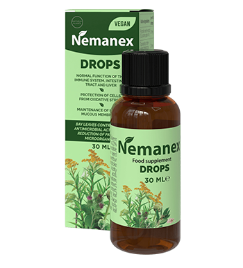

CAUSE DES PAPILLOMES - PARASITES
SI VOTRE CORPS A DES PAPILLOMES - CELA SIGNIFIE QUE VOTRE CORPS A DES
PARASITES
Si une personne a des papillomes sur la peau, cela signifie que des colonies entières de parasites se
sont installées dans les organes internes, qui mangent lentement son corps.
Selon les statistiques, plus d'un milliard de personnes sont infectées par des
parasites. Le signe d'infection le plus clair est l'apparition de papillomes.
Vos questions sont répondues
Dr Lidia Cosma
Professeur associé de l'Institut de recherche scientifique en parasitologie
médicale et médecine tropicale. Plus de 30 articles sur la recherche sur le génome des parasites. Il
se spécialise dans le diagnostic moléculaire de la leishmaniose.
Expérience médicale:
plus de 25 ans.
Note de l’éditeur: L’Institut de recherche sur la parasitologie médicale et la médecine tropicale a
découvert la véritable cause des papillomes chez l’homme: les infections parasitaires. Des études
récentes ont montré que les produits métaboliques des parasites sont toxiques et créent un
environnement favorable dans l'estomac pour le développement de bactéries nocives. Par conséquent,
chez les personnes infectées par des parasites, les papillomes sont visibles sur le corps.
Nous discuterons de cette question avec le Dr Lidia Cosma, professeur agrégé à l'Institut de recherche
en parasitologie médicale et médecine tropicale.
Correspondant: Dr Cosma, bonjour! Je vais commencer par le problème principal. Est-il vrai que la
plupart des gens en France sont infectés par des parasites?
Dr Cosma: Bien sûr. Nous occupons l'une des positions de premier plan au monde en matière de
contamination. En raison de la situation environnementale extrêmement mauvaise, de l'inertie des
autorités et de l'indifférence des gens.
Chaque année,des millions de personnes souffrent de maladies parasitaires. Il n'est pas rentable pour les
autorités de reconnaître l'importance de ce problème. De plus, les maladies causées par des parasites
obligent les gens à se rendre dans des cliniques et à acheter des médicaments coûteux. C'est une
entreprise énorme. J'espère que vous pouvez lire entre les lignes et comprendre ce que je veux dire.
Correspondant: Dr Cosma, les papillomes sont-ils vraiment le signe d'une infection parasitaire?
Dr Cosma: Oui. Plusieurs groupes de recherche ont confirmé que les produits sécrétés par les
parasites provoquent des papillomes sur la peau. De plus, si vous remarquez des papillomes sur la peau,
cela signifie que les parasites se sont déjà installés dans votre corps et pondent activement. Cela
signifie que pratiquement tous ceux qui ont des papillomes sur la peau sont dans un groupe à risque.
Encore une fois, environ 89% des décès, y compris ceux considérés comme «naturels», ont une cause commune
- des parasites qui mangent lentement l'intérieur d'une personne.
Correspondant: Les parasites sont généralement des helminthes qui peuvent provoquer des papillomes sur
la peau. Comment peuvent-ils être dangereux?
Dr Cosma: Il est en fait faux de penser que les parasites humains ne peuvent être que des vers.
Les organes sont habités par un grand nombre de types de parasites différents, ce qui entraîne une grande
variété de conséquences. Bien sûr, les helminthes sont très dangereux - ils détruisent en fait les
intestins. À propos, même les helminthes sont difficiles à détecter et à éliminer.
De plus, des milliers de parasites peuvent vivre dans votre foie, votre cerveau, vos poumons, votre sang
et votre estomac. Certains d'entre eux commencent immédiatement à détruire activement le corps. D'autres
parasites vivent inaperçus jusqu'à ce que leur nombre augmente tellement que le corps ne peut plus leur
résister. Ils entraînent un certain nombre de complications: crises cardiaques, cancers, cirrhose du
foie, néphrite, insuffisance rénale, et bien plus encore.
Je peux affirmer avec confiance que presque tout le monde dans notre pays est infecté. Le problème est
que la plupart des parasites sont extrêmement difficiles à détecter. Et ce n'est que lorsque les
conséquences d'une infection parasitaire deviennent perceptibles que les médecins essaient de les
éliminer. Mais même lors de l'autopsie, des tests spéciaux sont effectués pour détecter les parasites.
Le seul symptôme universel qui indique avec précision une infection parasitaire dans le corps humain est
le papillome.
Correspondant: Pouvez-vous donner des exemples spécifiques tirés de la pratique médicale?
Dr Cosma: Je peux vous parler de centaines de cas. Mais peut-être vaut-il mieux s’attarder sur
ces exemples qui démontrent clairement le danger des parasites.
1. Une histoire avec une fin heureuse. Le patient s'est plaint de douleurs abdominales récurrentes. Les
tests ont montré que ses intestins étaient pleins de vers. Ils ont creusé un vrai labyrinthe, le
processus de décomposition a commencé et le patient était très proche de la septicémie. Au cours de
l'opération, une partie de son intestin a été prélevée - une colonie d'helminthes et de tissus qui ont
commencé à se décomposer. Après une semaine de thérapie intensive, le patient s'est senti mieux.
2. Utérus contenant des colonies de parasites. Malheureusement, il n'était plus possible de se
débarrasser de la colonie de vers, car le parasite et ses larves remplissaient complètement l'utérus et
augmentaient son volume plusieurs fois. Par conséquent, l'utérus a dû être retiré. Mais le patient a été
sauvé. Comme l'empoisonnement du corps était trop grave, elle a suivi une thérapie spéciale, mais est
décédée dans les 3 ans qui ont suivi.
3. Kyste parasitaire dans le cœur. Cette maladie a été découverte trop tard. Le médecin qui l'a traité a
d'abord pensé que le patient avait une maladie coronarienne et une angine de poitrine, mais en réalité,
tout était bien pire. L'opération s'est avérée inutile, le traitement conservateur n'a pas aidé. La
transplantation cardiaque n'a pas pu être réalisée - aucun donneur n'a été trouvé. En conséquence, le
patient est décédé sans reprendre conscience.
Correspondant: Comment pouvez-vous comprendre qu'une personne est infectée par des parasites?
Dr Cosma: Malheureusement, nous pouvons dire qu'il n'y a pas de méthode unique pour
diagnostiquer les parasites dans le corps humain. Cela est en partie dû au fait qu'il existe tant de
types de parasites différents (plus de 2000 espèces connues), et en partie à la grande difficulté de
détection. Les tests parasitaires complets ne peuvent être effectués que dans quelques endroits en France
et sont très coûteux.
Symptômes initiaux indiquant la présence de parasites dans le corps:
- Papillomes ou verrues;
- Mauvaise haleine;
- Allergies (éruption cutanée, yeux larmoyants, nez qui coule);
- Inflammation et rougeur de la peau;
- Rhumes
fréquents, maux de gorge, congestion nasale;
- Fatigue chronique (vous
vous fatiguez rapidement, peu importe ce que vous faites);
- Maux de
tête fréquents;
- Constipation ou diarrhée;
-
Douleurs articulaires et musculaires;
- Nervosité, insomnie et troubles
de l'appétit;
- Cernes, poches sous les yeux;
Si vous présentez au moins un de ces symptômes, le risque d'avoir des parasites dans votre corps est de
97%. Et vous devez vous débarrasser de ces parasites le plus rapidement possible!
Comment se débarrasser des parasites et comment se protéger?
Dr Cosma: Il est très difficile de trouver des médicaments efficaces de nos jours. Bien sûr, il
existe des médicaments spéciaux qui peuvent débarrasser le corps des vers. Il existe également des
médicaments plus ou moins efficaces contre certains types de parasites hépatiques et pulmonaires. Le
principal problème est que ces médicaments ne tuent qu'un type particulier de parasite. De plus, chaque
personne est infectée par au moins 7 à 8 types de parasites. En moyenne, nous obtenons environ 11 à 14
types de parasites pour chaque personne infectée.
Jusqu'à présent, il n'y a qu'une seule solution pour une cure complète. Médicament antiparasitaire -
gouttes de . Les essais cliniques ont montré des résultats étonnants.
L'exportation de ce médicament est interdite tant qu'il n'est pas pleinement accessible à l'ensemble de
la population française.
Journaliste: Qu'est-ce qui rend si spécial? Quelle est la différence entre
ce remède et d'autres agents antiparasitaires?
Dr Cosma: Jusqu'à présent, c'est le seul agent antiparasitaire qui fonctionne vraiment dans le
monde. Cela aide à se débarrasser complètement des parasites. Pour cette raison, les chaînes
internationales de pharmacies et les laboratoires pharmaceutiques s'y intéressent et, par rapport à
d'autres agents antiparasitaires, il agit directement contre un certain nombre de parasites qui peuvent
habiter le corps humain. Compte tenu des problèmes de diagnostic, c'est aussi une excellente mesure
préventive. Après tout, comme mentionné précédemment, il est presque impossible de déterminer quels
parasites ont infecté le corps. Et détruit et élimine tous les parasites qui
vivent n'importe où dans le corps - du cerveau au cœur, au foie et aux intestins. Aucun autre produit
disponible aujourd'hui n'est capable de cela.
De plus, ce n'est pas un produit chimique, mais un produit entièrement naturel qui élimine les réactions
allergiques, les déséquilibres de la flore intestinale et d'autres problèmes qui peuvent survenir lors du
traitement d'une maladie avec des pilules classiques qui obligent votre corps à traiter de nombreux
produits chimiques.
IMPORTANT!
Un programme spécial a été lancé dans le laboratoire, grâce auquel le médicament est
maintenant disponible avec une réduction de 50%!
Il s'agit d'une offre limitée dans le
temps. Le original
peut être commandé sur tirage
officiel à 50% DE REMISE avant

1. L'efficacité de a été calculée selon la méthode standard (le
rapport du nombre de patients guéris au nombre total de patients dans un groupe de 100
personnes ayant reçu ):
- Élimination des vers
adultes et des œufs: 99%.
- Normalisation de la fonction et de l'état du pancréas:
80%.
- Élimination de la dermatite allergique: 90%.
- Réduction des symptômes
de gastrite, ulcères, diarrhée: 90%.
- Réduction des symptômes de l'anémie: 99%.
- Élimination des papillomes et des verrues: 99%.
2. Aucun effet
secondaire, y compris des réactions allergiques, n'a été trouvé.
3.
est reconnu comme le remède moderne le plus puissant contre les
parasites humains.
4. Pour que les gouttes fonctionnent au mieux, il est recommandé de les utiliser avec un
spray pour obtenir un meilleur effet.
Ce remède a été certifié en Europe à l'Université de Parasitologie de Paris. Les essais cliniques ont
pleinement confirmé les données obtenues dans notre pays. Les Français ont même signalé des taux de
récupération plus élevés.
Une série d'essais cliniques en Chine, au Japon et au Vietnam est maintenant presque terminée. Les
pays africains manifestent un grand intérêt pour ce médicament. Tous les tests sans exception montrent
que ce produit est très efficace.
Correspondant: Je pense que nos lecteurs veulent savoir où acheter .
Dr Cosma: Il s'agit d'une offre limitée. Bien que cela ne soit disponible que dans certaines
régions
Mais est facile pour les résidents de France: il vous suffit d'envoyer une
demande avec votre nom et votre numéro de téléphone afin qu'un opérateur puisse vous contacter. Si
l'option d'envoi d'une demande est activée, cela signifie que le médicament est toujours disponible.
Je garantis personnellement que toute personne qui s'informe sur le site recevra ses commandes.
Correspondant: Dr Cosma, aimeriez-vous dire autre chose à nos lecteurs avant de terminer
l'interview?
Dr Cosma: La seule chose que je veux dire, c'est que vous prenez soin de votre santé. Vous ne
le savez peut-être pas, mais les parasites vivent très probablement dans votre corps. Ils peuvent être
n'importe où - dans le sang, les intestins, les poumons, le cœur, le cerveau. Vous pouvez ne pas
ressentir comment ils vous mangent de l'intérieur tout en empoisonnant votre corps. En conséquence, de
nombreux problèmes de santé surviennent qui réduisent l'espérance de vie de 15 à 25 ans. N'attendez
pas qu'il soit trop tard. Nettoyez votre corps maintenant.
IMPORTANT! Il a été conclu que le
et le
sont les meilleurs moments pour commencer le traitement. L'effet du produit est amélioré. La
récupération est 47% plus rapide qu'à d'autres moments de l'année.
![]()